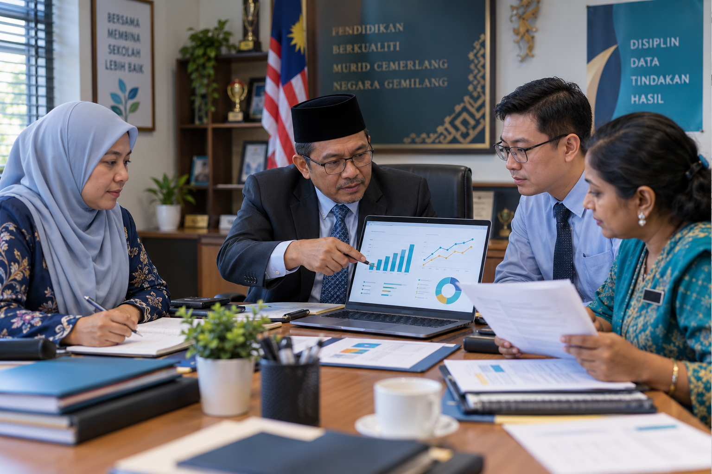

Analisis Kehadiran dan Dashboard
Bersihkan data, kesan murid berisiko dan hasilkan dashboard serta intervensi.
Latihan pengurusan data, HEM, dokumen rasmi, keselamatan, pematuhan dan pembuatan keputusan sekolah.

Analisis data, dashboard, pelaporan dan tindakan.
Bersihkan data, kesan murid berisiko dan hasilkan dashboard serta intervensi.
Bandingkan prestasi mengikut kelas, mata pelajaran dan pentaksiran.
Analisis kepuasan, kelompokkan komen dan bina pelan respons sekolah.
Tukarkan dapatan kepada objektif, aktiviti, pegawai, tarikh, KPI dan pemantauan.
Gabungkan kehadiran, prestasi, disiplin rekaan dan intervensi untuk menentukan tahap risiko serta tindakan.
Satukan kehadiran, guru ganti, program, aduan kemudahan dan tindakan segera dalam satu paparan.
Analisis dokumen dan pengesahan berdasarkan bukti.
Ekstrak tujuan, sasaran, tarikh, tanggungjawab dan dokumen yang diperlukan.
Bina panduan skim perguruan, jadual gred, laluan kerjaya dan FAQ berdasarkan sumber rasmi.
Buka latihan lengkap →Gabungkan pekeliling, SOP dan garis panduan kepada pusat soal jawab serta senarai semak.
Gabungkan analisis data dengan bukti dokumen untuk laporan, agenda dan tindakan susulan.
Bandingkan laporan pemeriksaan dengan garis panduan, kelaskan risiko dan bina pelan mitigasi.
Susun evidens, kesan jurang bukti dan hasilkan matriks dapatan serta tindakan penambahbaikan.
Gunakan senario rekaan untuk membina tindakan segera, aliran pelaporan, dokumentasi dan susulan.
Surat rasmi, laporan, kertas kerja, minit mesyuarat, pengacara majlis dan Prompt Pentadbiran Sekolah.